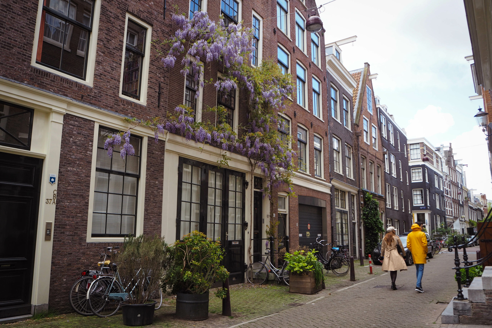

- #1 Amsterdam is 219.3 km²
- #2 The origins of the name Amsterdam.
- #3 Amsterdam has only been the capital of the Netherlands since 1983.
- #4 The Stock exchange located in the city centre is the oldest in the World.
- #5 Amsterdam is very international.
Van Gogh Museum
Stap in de wereld van Van Gogh in het Van Gogh Museum. Bekijk
Vincent van Goghs meesterwerken en ontdek de ideeën en ambities
achter zijn kunst. Bezoek tentoonstellingen over Van Gogh en de
kunst van zijn tijd.

De Jordaan
Deze voormalige volksbuurt staat bekend om zijn radicale
politiek en over-the-top meezingers. Hoewel de gentrificatie van
de afgelopen decennia meer galerieën en boetieks naar de met
iepen omzoomde grachtenstraten heeft getrokken, heerst hier nog
steeds een duidelijk gemeenschapsgevoel. Breng een middag door
met het verkennen van de levendige caféterrassen, de bruisende
Noordermarkt, eigenzinnige musea en attracties van wereldklasse,
zoals het Anne Frank Huis.
